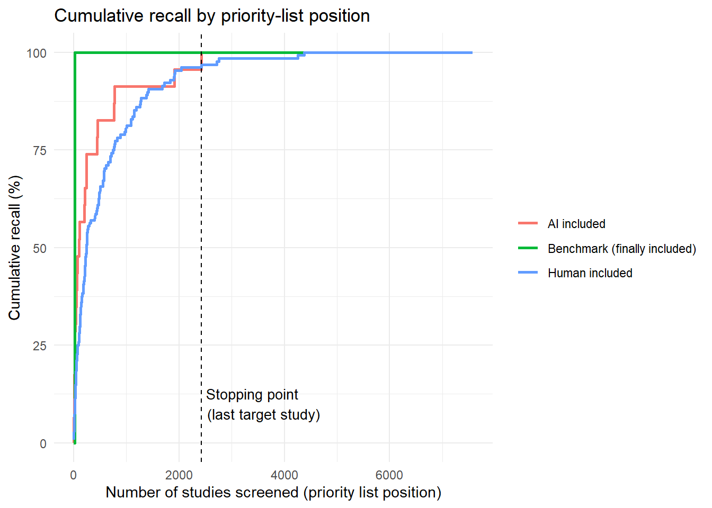

Code
knitr::opts_knit$set(root.dir = "C:/Users/B375477/Desktop/AI-ML-screening")
library(dplyr)
library(readr)
library(stringr)
library(tidyr)
library(ggplot2)
library(AIscreenR)
library(reticulate)This is a complete walkthrough of the priority-screening pipeline for the asylum systematic review, from AI-screened data through to a full Monte Carlo simulation of the method’s reliability.
The pipeline has four stages:
asylum/data_processing.r’s output (deduplicated citations, tagged with human_code and cite_label), and fix a data-quality issue in the eppi_id column.AIscreenR::tabscreen_ollama() with a local model to produce a decision_binary AI decision for every record.run_priority_screening() once by hand to rank the unscreened pool and see where the target studies land.knitr::opts_knit$set(root.dir = "C:/Users/B375477/Desktop/AI-ML-screening")
library(dplyr)
library(readr)
library(stringr)
library(tidyr)
library(ggplot2)
library(AIscreenR)
library(reticulate)asylum/data_processing.r already deduplicated the candidate pool and tagged every record with human_code (1 = human-included at title/abstract stage, 0 = excluded) and cite_label ("benchmark" marks the true gold-standard finally-included studies). This walkthrough picks up from that output.
Two cleanup steps happen here:
data_processing.r couldn’t match to an eppi_id all share eppi_id == "". Since eppi_id is used as the unique key throughout run_priority_screening() (distinct(), embeddings row names, match()), multiple records sharing one blank ID collide with each other instead of being treated as distinct studies - and worse, a naive distinct(eppi_id) call would collapse them all down to a single row, silently discarding the rest. Giving each one a unique placeholder ID fixes both problems.asylum_data <- readRDS("asylum/data/all_studies_with_labels.rds") |>
# Drop records without an abstract
filter(!is.na(abstract), str_trim(abstract) != "") |>
# Benchmark studies data_processing.r couldn't match to an eppi_id (non_eppi_studies) all share
# eppi_id == "" - give each a unique placeholder so eppi_id stays a genuine unique key throughout
# the whole process
mutate(eppi_id = if_else(eppi_id == "" | is.na(eppi_id), paste0("no_eppi_", row_number()), eppi_id)) |>
distinct(eppi_id, .keep_all = TRUE)tabscreen_ollama()prompt <- "
You are screening abstracts for a systematic review on the impact of detention on the mental and physical health of asylum seekers. This is a liberal, first-pass title/abstract screen - when in doubt, lean toward including a study; stricter criteria (such as requiring a comparison group) are applied later at full-text review, not here.
Answer two questions, then give a final decision.
---
## Question 1: Detained asylum seekers
**Question:** Does this study concern asylum seekers with a plausible history of detention? Answer 'Yes' or 'No'.
**Description:** Detention means confinement in an immigration holding centre, camp, or jail to process an asylum claim or enforce deportation. Answer 'Yes' if the abstract says the population was detained, OR if it describes indicators strongly linked to a detention history - temporary protection visa status, insecure residency status, or postmigration stress in an asylum-seeker population - even without the word 'detention'. Answer 'No' only if the abstract clearly rules out detention (e.g. an explicitly non-detained community sample) or is about an unrelated population (general immigration detainees, criminal detainees, detention in the person's home country).
**Examples:**
- 'Yes' — 'We compared PTSD symptoms of detained and non-detained asylum seekers.'
- 'Yes' — 'We compared psychological outcomes of asylum seekers on temporary versus permanent protection visas.'
- 'No' — 'This study examines asylum seekers living in the community, none of whom have been detained.'
**Default if missing:** 'Yes'
---
## Question 2: Reports data
**Question:** Does the abstract report any empirical findings - quantitative results, or specific figures/statistics from qualitative or mixed-methods work? Answer 'Yes' or 'No'.
**Description:** Answer 'Yes' for studies with quantitative measures (even a single group, no comparison group needed), mixed-methods studies, and reports or interview studies that cite concrete numbers (counts, durations, percentages). Answer 'No' only for pure commentaries, editorials, letters, or opinion pieces with no findings at all.
**Examples:**
- 'Yes' — 'Detained asylum seekers (n=62) were assessed for PTSD and depression.'
- 'Yes' — 'Based on interviews, this report documents migrants detained for an average of 3.4 months.'
- 'No' — 'In this commentary, we discuss critiques of detention policy.'
**Default if missing:** 'Yes'
---
## Question 3: Inclusion decision
**Question:** Should this abstract be included for full-text review? Answer 'Include' or 'Exclude'.
**Description:** Answer 'Include' if Question 1 is 'Yes' and Question 2 is 'Yes', or if either is uncertain. Answer 'Exclude' only if Question 1 or Question 2 is clearly 'No'.
**Default if missing:** 'Include'
---
"future::plan(future::multisession)
screening_results <- AIscreenR::tabscreen_ollama(
data = asylum_data,
prompt = prompt,
studyid = eppi_id,
title = title,
abstract = abstract,
model = "ministral-3:8b",
decision_description = FALSE,
overinclusive = FALSE,
)
future::plan(future::sequential)
# Remove errors if this seems reasonable
screening_results$answer_data <- screening_results$answer_data |>
filter(decision_gpt %in% c("0", "1"))
saveRDS(screening_results, "asylum/data/screening_results_asylum.rds")Reload the saved result to continue:
screening_results <- readRDS("asylum/data/screening_results_asylum.rds")AIscreenR::screen_analyzer(screening_results)# A tibble: 1 × 9
promptid model reps top_p p_agreement recall specificity n_screened n_missing
<int> <chr> <dbl> <dbl> <dbl> <dbl> <dbl> <int> <int>
1 1 mini… 1 1 0.909 0.666 0.918 8430 0Make a new column included_final that flags the benchmark studies.
screening_results$answer_data$included_final <-
ifelse(screening_results$answer_data$cite_label == "benchmark", 1, 0)Run the screening with the following settings: relevant_col = c(“human_code”, “decision_binary”) (the column(s) in data that indicate whether a study is relevant (1) or not (0)), c_target = 0.90, R_c = 0.90(90% sure that we’ve seen at least 90% of the relevant studies), alpha = 0 (Ridge regression), and seed_pct = 0.5. (We know 50% of the truly relevant studies beforehand)
last_target_row - the official Hou & Tipton stopping point: the last row among the reliability-guaranteed target set T. This is what workload_saved is based on.last_s20_row - the last row among the held-out validation subset of benchmark studies (S20).last_human_row - the last row of any human_code == 1 record (the broader, title/abstract-stage “included” category, not just benchmarks).last_benchmark_row - the last row of any cite_label == "benchmark" record (the true gold-standard set) that actually appears in the ranked list. Most important that this is smaller than last_target_row. if it were larger, the method would have failed to recover all the benchmark studies before stopping.last_ai_row - the last row of any decision_binary == 1 record.workload_saved - the percentage of the pile that wouldn’t need manual screening under this method, i.e., the proportion of the priority list after the stopping point.Last target row: 2425 Last S20 row: 24 Last human row: 4375 Last benchmark row: 24 Last AI row: 2425 Workload saved: 68 %
main_design sweeps two things at once:
alpha (0 = Ridge, 1 = LASSO) - which classifier regularization to use.relevant_col - what defines “relevant” for target-set (T) sampling: human_code alone, decision_binary alone, or both together. Note this only affects the target set, not what the classifier is trained on (ah_plus always hardcodes both signals) This means that "human_code" alone is the most rigorous setting, since it’s the only one that can pull AI-and-human disagreement cases into the target set, stress-testing whether the ranking still works when the AI missed something a human caught.main_design <- tidyr::expand_grid(
dat_full = list(screening_results$answer_data),
model = "all-MiniLM-L6-v2",
relevant_col = list(
"human_code",
"decision_binary",
c("human_code", "decision_binary")
),
pool_size = NA_real_,
relevant_pct = NA_real_,
alpha = c(0, 1),
RandomForrest = FALSE,
c_target = 0.95,
R_c = 0.95,
ai_miss_pct = 0,
seed_pct = 1,
)
sim_results_asylum <- run_sim(iterations = 1, design_factors = main_design) user system elapsed
5.14 4.25 667.50 saveRDS(sim_results_asylum, "asylum/data/simulation_results_asylum.rds")| alpha | relevant_col | RandomForrest | c_target | R_c | ai_miss_pct | seed_pct | n_failed | mean_k_min | mean_last_target_row | mean_workload_saved_pct | mean_last_s20_row | mean_last_benchmark_row | mean_last_human_row | mean_last_ai_row |
|---|---|---|---|---|---|---|---|---|---|---|---|---|---|---|
| 0 | human_code, decision_binary | FALSE | 0.95 | 0.95 | 0 | 1 | 0 | 59 | 2732 | 64.12815 | 21 | 21 | 5440 | 2732 |
| 1 | human_code | FALSE | 0.95 | 0.95 | 0 | 1 | 0 | 59 | 3153 | 58.48585 | 11 | 11 | 6009 | 2471 |
| 0 | decision_binary | FALSE | 0.95 | 0.95 | 0 | 1 | 0 | 59 | 3819 | 49.85557 | 10 | 10 | 5307 | 3819 |
| 1 | human_code, decision_binary | FALSE | 0.95 | 0.95 | 0 | 1 | 0 | 59 | 3850 | 49.44853 | 36 | 36 | 5839 | 3850 |
| 1 | decision_binary | FALSE | 0.95 | 0.95 | 0 | 1 | 0 | 59 | 4126 | 45.82458 | 10 | 10 | 5810 | 4126 |
| 0 | human_code | FALSE | 0.95 | 0.95 | 0 | 1 | 0 | 59 | 5351 | 29.54575 | 22 | 22 | 5351 | 4807 |